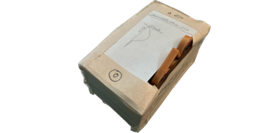

THE SCIENCE
FORMS OF ENERGY, CONNECTIVITY, AND PROTECTION IN THE IPHONE.
Lithium Battery
Converting chemical energy to electrical.Lithium batteries are light-weight, energy dense batteries that make them ideal for portable devices with a longer battery life.
Accelerometer Sensors
Detercting motion using acceleration. By detecting motion on three different axies, allowing a digial representation of a direction and magnitude of any motion.Proximity Sensors
Sensors that can detect input without touch. By using proximity sensors, the iPhone is able to be controled without any touch. This allows users to pickup calls by just putting the phone close to their face.
GPS Navigation
Using satelites to position the iPhone. By connecting to satelities in Earth's orbit, the iPhone is able to position itself on Earth's surface. This allows the iPhone to naivgate it's users across the world.Ceramic Shield
Growing nanocrystles for stronger glass. In order to give the iPhone it's remarcably strong screen, ceramnic nanocrystles were grown in the glass for extra durability.Mathmatics
SINUSUDIAL MOTION IN THE IPHONE.
When using any scrollbar in the iPhone, sinusudial motion is applied. At the start of the scroll, the speed of the scrollbar is at it's absolute lowest, but it slowly starts rising. Once at the apex of force, and where you would let go, the scrollbar is at it's highest point of speed. After the release, due to the momentum the scrollbar continues going, but slowly slows down, until reaching equlibrium at rest once more.
Don't believe us? Try it out on this website! This monitor is a touchscreen!
The motion of this scrollbar can be perfectly represented by speed-over-time sinusudial graph. An example is provided on the right of this paragraph.
MATHMATICAL MODEL OF SINUSUDIAL MOTION.
